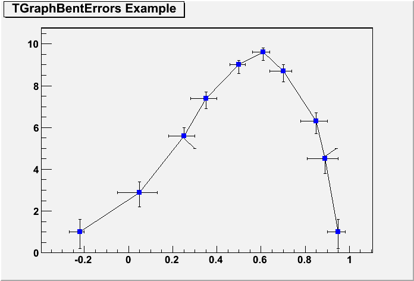

class TGraphBentErrors: public TGraph
TGraphBentErrors class
The TGraphBentErrors painting is permofed thanks to the TGraphPainter class. All details about the various painting options are given in this class.
The picture below gives an example:
{kind=link}

{
c1 = new TCanvas("c1","A Simple Graph with bent error bars",200,10,700,500);
Int_t n = 10;
Double_t x[n] = {-0.22, 0.05, 0.25, 0.35, 0.5, 0.61,0.7,0.85,0.89,0.95};
Double_t y[n] = {1,2.9,5.6,7.4,9,9.6,8.7,6.3,4.5,1};
Double_t exl[n] = {.05,.1,.07,.07,.04,.05,.06,.07,.08,.05};
Double_t eyl[n] = {.8,.7,.6,.5,.4,.4,.5,.6,.7,.8};
Double_t exh[n] = {.02,.08,.05,.05,.03,.03,.04,.05,.06,.03};
Double_t eyh[n] = {.6,.5,.4,.3,.2,.2,.3,.4,.5,.6};
Double_t exld[n] = {.0,.0,.0,.0,.0,.0,.0,.0,.0,.0};
Double_t eyld[n] = {.0,.0,.05,.0,.0,.0,.0,.0,.0,.0};
Double_t exhd[n] = {.0,.0,.0,.0,.0,.0,.0,.0,.0,.0};
Double_t eyhd[n] = {.0,.0,.0,.0,.0,.0,.0,.0,.05,.0};
gr = new TGraphBentErrors(n,x,y,exl,exh,eyl,eyh,exld,exhd,eyld,eyhd);
gr->SetTitle("TGraphBentErrors Example");
gr->SetMarkerColor(4);
gr->SetMarkerStyle(21);
gr->Draw("ALP");
return c1;
}Function Members (Methods)
public:
| TGraphBentErrors() | |
| TGraphBentErrors(Int_t n) | |
| TGraphBentErrors(const TGraphBentErrors& gr) | |
| TGraphBentErrors(Int_t n, const Float_t* x, const Float_t* y, const Float_t* exl = 0, const Float_t* exh = 0, const Float_t* eyl = 0, const Float_t* eyh = 0, const Float_t* exld = 0, const Float_t* exhd = 0, const Float_t* eyld = 0, const Float_t* eyhd = 0) | |
| TGraphBentErrors(Int_t n, const Double_t* x, const Double_t* y, const Double_t* exl = 0, const Double_t* exh = 0, const Double_t* eyl = 0, const Double_t* eyh = 0, const Double_t* exld = 0, const Double_t* exhd = 0, const Double_t* eyld = 0, const Double_t* eyhd = 0) | |
| virtual | ~TGraphBentErrors() |
| void | TObject::AbstractMethod(const char* method) const |
| virtual void | TObject::AppendPad(Option_t* option = "") |
| virtual void | Apply(TF1* f) |
| virtual void | TGraph::Browse(TBrowser* b) |
| virtual Double_t | TGraph::Chisquare(const TF1* f1) const |
| static TClass* | Class() |
| virtual const char* | TObject::ClassName() const |
| virtual void | TNamed::Clear(Option_t* option = "") |
| virtual TObject* | TNamed::Clone(const char* newname = "") const |
| virtual Int_t | TNamed::Compare(const TObject* obj) const |
| static Bool_t | TGraph::CompareArg(const TGraph* gr, Int_t left, Int_t right) |
| static Bool_t | TGraph::CompareRadius(const TGraph* gr, Int_t left, Int_t right) |
| static Bool_t | TGraph::CompareX(const TGraph* gr, Int_t left, Int_t right) |
| static Bool_t | TGraph::CompareY(const TGraph* gr, Int_t left, Int_t right) |
| virtual void | ComputeRange(Double_t& xmin, Double_t& ymin, Double_t& xmax, Double_t& ymax) const |
| virtual void | TNamed::Copy(TObject& named) const |
| virtual void | TObject::Delete(Option_t* option = "")MENU |
| Int_t | TAttLine::DistancetoLine(Int_t px, Int_t py, Double_t xp1, Double_t yp1, Double_t xp2, Double_t yp2) |
| virtual Int_t | TGraph::DistancetoPrimitive(Int_t px, Int_t py) |
| virtual void | TGraph::Draw(Option_t* chopt = "") |
| virtual void | TObject::DrawClass() constMENU |
| virtual TObject* | TObject::DrawClone(Option_t* option = "") constMENU |
| virtual void | TGraph::DrawGraph(Int_t n, const Int_t* x, const Int_t* y, Option_t* option = "") |
| virtual void | TGraph::DrawGraph(Int_t n, const Float_t* x, const Float_t* y, Option_t* option = "") |
| virtual void | TGraph::DrawGraph(Int_t n, const Double_t* x = 0, const Double_t* y = 0, Option_t* option = "") |
| virtual void | TGraph::DrawPanel()MENU |
| virtual void | TObject::Dump() constMENU |
| virtual void | TObject::Error(const char* method, const char* msgfmt) const |
| virtual Double_t | TGraph::Eval(Double_t x, TSpline* spline = 0, Option_t* option = "") const |
| virtual void | TObject::Execute(const char* method, const char* params, Int_t* error = 0) |
| virtual void | TObject::Execute(TMethod* method, TObjArray* params, Int_t* error = 0) |
| virtual void | TGraph::ExecuteEvent(Int_t event, Int_t px, Int_t py) |
| virtual void | TGraph::Expand(Int_t newsize) |
| virtual void | TGraph::Expand(Int_t newsize, Int_t step) |
| virtual void | TObject::Fatal(const char* method, const char* msgfmt) const |
| virtual void | TNamed::FillBuffer(char*& buffer) |
| virtual TObject* | TGraph::FindObject(const char* name) const |
| virtual TObject* | TGraph::FindObject(const TObject* obj) const |
| virtual TFitResultPtr | TGraph::Fit(const char* formula, Option_t* option = "", Option_t* goption = "", Axis_t xmin = 0, Axis_t xmax = 0)MENU |
| virtual TFitResultPtr | TGraph::Fit(TF1* f1, Option_t* option = "", Option_t* goption = "", Axis_t xmin = 0, Axis_t xmax = 0) |
| virtual void | TGraph::FitPanel()MENU |
| virtual Double_t | TGraph::GetCorrelationFactor() const |
| virtual Double_t | TGraph::GetCovariance() const |
| virtual Option_t* | TObject::GetDrawOption() const |
| static Long_t | TObject::GetDtorOnly() |
| Bool_t | TGraph::GetEditable() const |
| virtual Double_t | GetErrorX(Int_t bin) const |
| virtual Double_t | GetErrorXhigh(Int_t bin) const |
| virtual Double_t | GetErrorXlow(Int_t bin) const |
| virtual Double_t | GetErrorY(Int_t bin) const |
| virtual Double_t | GetErrorYhigh(Int_t bin) const |
| virtual Double_t | GetErrorYlow(Int_t bin) const |
| virtual Double_t* | TGraph::GetEX() const |
| virtual Double_t* | GetEXhigh() const |
| virtual Double_t* | GetEXhighd() const |
| virtual Double_t* | GetEXlow() const |
| virtual Double_t* | GetEXlowd() const |
| virtual Double_t* | TGraph::GetEY() const |
| virtual Double_t* | GetEYhigh() const |
| virtual Double_t* | GetEYhighd() const |
| virtual Double_t* | GetEYlow() const |
| virtual Double_t* | GetEYlowd() const |
| virtual Color_t | TAttFill::GetFillColor() const |
| virtual Style_t | TAttFill::GetFillStyle() const |
| TF1* | TGraph::GetFunction(const char* name) const |
| TH1F* | TGraph::GetHistogram() const |
| virtual const char* | TObject::GetIconName() const |
| virtual Color_t | TAttLine::GetLineColor() const |
| virtual Style_t | TAttLine::GetLineStyle() const |
| virtual Width_t | TAttLine::GetLineWidth() const |
| TList* | TGraph::GetListOfFunctions() const |
| virtual Color_t | TAttMarker::GetMarkerColor() const |
| virtual Size_t | TAttMarker::GetMarkerSize() const |
| virtual Style_t | TAttMarker::GetMarkerStyle() const |
| Double_t | TGraph::GetMaximum() const |
| Int_t | TGraph::GetMaxSize() const |
| virtual Double_t | TGraph::GetMean(Int_t axis = 1) const |
| Double_t | TGraph::GetMinimum() const |
| Int_t | TGraph::GetN() const |
| virtual const char* | TNamed::GetName() const |
| virtual char* | TObject::GetObjectInfo(Int_t px, Int_t py) const |
| static Bool_t | TObject::GetObjectStat() |
| virtual Option_t* | TObject::GetOption() const |
| virtual Int_t | TGraph::GetPoint(Int_t i, Double_t& x, Double_t& y) const |
| virtual Double_t | TGraph::GetRMS(Int_t axis = 1) const |
| virtual const char* | TNamed::GetTitle() const |
| virtual UInt_t | TObject::GetUniqueID() const |
| Double_t* | TGraph::GetX() const |
| TAxis* | TGraph::GetXaxis() const |
| Double_t* | TGraph::GetY() const |
| TAxis* | TGraph::GetYaxis() const |
| virtual Bool_t | TObject::HandleTimer(TTimer* timer) |
| virtual ULong_t | TNamed::Hash() const |
| virtual void | TObject::Info(const char* method, const char* msgfmt) const |
| virtual Bool_t | TObject::InheritsFrom(const char* classname) const |
| virtual Bool_t | TObject::InheritsFrom(const TClass* cl) const |
| virtual void | TGraph::InitExpo(Double_t xmin = 0, Double_t xmax = 0) |
| virtual void | TGraph::InitGaus(Double_t xmin = 0, Double_t xmax = 0) |
| virtual void | TGraph::InitPolynom(Double_t xmin = 0, Double_t xmax = 0) |
| virtual Int_t | TGraph::InsertPoint()MENU |
| virtual void | TObject::Inspect() constMENU |
| virtual Double_t | TGraph::Integral(Int_t first = 0, Int_t last = -1) const |
| void | TObject::InvertBit(UInt_t f) |
| virtual TClass* | IsA() const |
| virtual Bool_t | TGraph::IsEditable() const |
| virtual Bool_t | TObject::IsEqual(const TObject* obj) const |
| virtual Bool_t | TObject::IsFolder() const |
| virtual Int_t | TGraph::IsInside(Double_t x, Double_t y) const |
| Bool_t | TObject::IsOnHeap() const |
| virtual Bool_t | TNamed::IsSortable() const |
| virtual Bool_t | TAttFill::IsTransparent() const |
| Bool_t | TObject::IsZombie() const |
| virtual void | TGraph::LeastSquareFit(Int_t m, Double_t* a, Double_t xmin = 0, Double_t xmax = 0) |
| virtual void | TGraph::LeastSquareLinearFit(Int_t n, Double_t& a0, Double_t& a1, Int_t& ifail, Double_t xmin = 0, Double_t xmax = 0) |
| virtual void | TNamed::ls(Option_t* option = "") const |
| void | TObject::MayNotUse(const char* method) const |
| virtual Int_t | TGraph::Merge(TCollection* list) |
| virtual void | TAttLine::Modify() |
| virtual Bool_t | TObject::Notify() |
| void | TObject::Obsolete(const char* method, const char* asOfVers, const char* removedFromVers) const |
| static void | TObject::operator delete(void* ptr) |
| static void | TObject::operator delete(void* ptr, void* vp) |
| static void | TObject::operator delete[](void* ptr) |
| static void | TObject::operator delete[](void* ptr, void* vp) |
| void* | TObject::operator new(size_t sz) |
| void* | TObject::operator new(size_t sz, void* vp) |
| void* | TObject::operator new[](size_t sz) |
| void* | TObject::operator new[](size_t sz, void* vp) |
| TGraphBentErrors& | operator=(const TGraphBentErrors&) |
| virtual void | TGraph::Paint(Option_t* chopt = "") |
| void | TGraph::PaintGraph(Int_t npoints, const Double_t* x, const Double_t* y, Option_t* chopt) |
| void | TGraph::PaintGrapHist(Int_t npoints, const Double_t* x, const Double_t* y, Option_t* chopt) |
| virtual void | TGraph::PaintStats(TF1* fit) |
| virtual void | TObject::Pop() |
| virtual void | Print(Option_t* chopt = "") const |
| virtual Int_t | TObject::Read(const char* name) |
| virtual void | TGraph::RecursiveRemove(TObject* obj) |
| virtual Int_t | TGraph::RemovePoint()MENU |
| virtual Int_t | TGraph::RemovePoint(Int_t ipoint) |
| virtual void | TAttFill::ResetAttFill(Option_t* option = "") |
| virtual void | TAttLine::ResetAttLine(Option_t* option = "") |
| virtual void | TAttMarker::ResetAttMarker(Option_t* toption = "") |
| void | TObject::ResetBit(UInt_t f) |
| virtual void | TObject::SaveAs(const char* filename = "", Option_t* option = "") constMENU |
| virtual void | TAttFill::SaveFillAttributes(ostream& out, const char* name, Int_t coldef = 1, Int_t stydef = 1001) |
| virtual void | TAttLine::SaveLineAttributes(ostream& out, const char* name, Int_t coldef = 1, Int_t stydef = 1, Int_t widdef = 1) |
| virtual void | TAttMarker::SaveMarkerAttributes(ostream& out, const char* name, Int_t coldef = 1, Int_t stydef = 1, Int_t sizdef = 1) |
| virtual void | SavePrimitive(ostream& out, Option_t* option = "") |
| virtual void | TGraph::Set(Int_t n) |
| void | TObject::SetBit(UInt_t f) |
| void | TObject::SetBit(UInt_t f, Bool_t set) |
| virtual void | TObject::SetDrawOption(Option_t* option = "")MENU |
| static void | TObject::SetDtorOnly(void* obj) |
| virtual void | TGraph::SetEditable(Bool_t editable = kTRUE)TOGGLE GETTER |
| virtual void | TAttFill::SetFillAttributes()MENU |
| virtual void | TAttFill::SetFillColor(Color_t fcolor) |
| virtual void | TAttFill::SetFillStyle(Style_t fstyle) |
| virtual void | TGraph::SetHistogram(TH1F* h) |
| virtual void | TAttLine::SetLineAttributes()MENU |
| virtual void | TAttLine::SetLineColor(Color_t lcolor) |
| virtual void | TAttLine::SetLineStyle(Style_t lstyle) |
| virtual void | TAttLine::SetLineWidth(Width_t lwidth) |
| virtual void | TAttMarker::SetMarkerAttributes()MENU |
| virtual void | TAttMarker::SetMarkerColor(Color_t tcolor = 1) |
| virtual void | TAttMarker::SetMarkerSize(Size_t msize = 1) |
| virtual void | TAttMarker::SetMarkerStyle(Style_t mstyle = 1) |
| virtual void | TGraph::SetMaximum(Double_t maximum = -1111)MENU |
| virtual void | TGraph::SetMinimum(Double_t minimum = -1111)MENU |
| virtual void | TNamed::SetName(const char* name)MENU |
| virtual void | TNamed::SetNameTitle(const char* name, const char* title) |
| static void | TObject::SetObjectStat(Bool_t stat) |
| virtual void | TGraph::SetPoint(Int_t i, Double_t x, Double_t y) |
| virtual void | SetPointError(Double_t exl, Double_t exh, Double_t eyl, Double_t eyh, Double_t exld = 0, Double_t exhd = 0, Double_t eyld = 0, Double_t eyhd = 0)MENU |
| virtual void | SetPointError(Int_t i, Double_t exl, Double_t exh, Double_t eyl, Double_t eyh, Double_t exld = 0, Double_t exhd = 0, Double_t eyld = 0, Double_t eyhd = 0) |
| virtual void | TGraph::SetTitle(const char* title = "")MENU |
| virtual void | TObject::SetUniqueID(UInt_t uid) |
| virtual void | ShowMembers(TMemberInspector& insp) |
| virtual Int_t | TNamed::Sizeof() const |
| virtual void | TGraph::Sort(Bool_t (*)(const TGraph*, Int_t, Int_t) greater = &TGraph::CompareX, Bool_t ascending = kTRUE, Int_t low = 0, Int_t high = -1111) |
| virtual void | Streamer(TBuffer& b) |
| void | StreamerNVirtual(TBuffer& b) |
| virtual void | TObject::SysError(const char* method, const char* msgfmt) const |
| Bool_t | TObject::TestBit(UInt_t f) const |
| Int_t | TObject::TestBits(UInt_t f) const |
| virtual void | TGraph::UseCurrentStyle() |
| virtual void | TObject::Warning(const char* method, const char* msgfmt) const |
| virtual Int_t | TObject::Write(const char* name = 0, Int_t option = 0, Int_t bufsize = 0) |
| virtual Int_t | TObject::Write(const char* name = 0, Int_t option = 0, Int_t bufsize = 0) const |
| void | TGraph::Zero(Int_t& k, Double_t AZ, Double_t BZ, Double_t E2, Double_t& X, Double_t& Y, Int_t maxiterations) |
protected:
| virtual Double_t** | Allocate(Int_t size) |
| Double_t** | TGraph::AllocateArrays(Int_t Narrays, Int_t arraySize) |
| virtual void | CopyAndRelease(Double_t** newarrays, Int_t ibegin, Int_t iend, Int_t obegin) |
| virtual Bool_t | CopyPoints(Double_t** arrays, Int_t ibegin, Int_t iend, Int_t obegin) |
| Bool_t | CtorAllocate() |
| virtual void | TObject::DoError(int level, const char* location, const char* fmt, va_list va) const |
| Double_t** | TGraph::ExpandAndCopy(Int_t size, Int_t iend) |
| virtual void | FillZero(Int_t begin, Int_t end, Bool_t from_ctor = kTRUE) |
| void | TObject::MakeZombie() |
| Double_t** | TGraph::ShrinkAndCopy(Int_t size, Int_t iend) |
| virtual void | SwapPoints(Int_t pos1, Int_t pos2) |
| static void | TGraph::SwapValues(Double_t* arr, Int_t pos1, Int_t pos2) |
Data Members
public:
| enum TGraph::[unnamed] { | kClipFrame | |
| kNotEditable | ||
| }; | ||
| enum TObject::EStatusBits { | kCanDelete | |
| kMustCleanup | ||
| kObjInCanvas | ||
| kIsReferenced | ||
| kHasUUID | ||
| kCannotPick | ||
| kNoContextMenu | ||
| kInvalidObject | ||
| }; | ||
| enum TObject::[unnamed] { | kIsOnHeap | |
| kNotDeleted | ||
| kZombie | ||
| kBitMask | ||
| kSingleKey | ||
| kOverwrite | ||
| kWriteDelete | ||
| }; |
protected:
| Double_t* | fEXhigh | [fNpoints] array of X high errors |
| Double_t* | fEXhighd | [fNpoints] array of X high displacements |
| Double_t* | fEXlow | [fNpoints] array of X low errors |
| Double_t* | fEXlowd | [fNpoints] array of X low displacements |
| Double_t* | fEYhigh | [fNpoints] array of Y high errors |
| Double_t* | fEYhighd | [fNpoints] array of Y high displacements |
| Double_t* | fEYlow | [fNpoints] array of Y low errors |
| Double_t* | fEYlowd | [fNpoints] array of Y low displacements |
| Color_t | TAttFill::fFillColor | fill area color |
| Style_t | TAttFill::fFillStyle | fill area style |
| TList* | TGraph::fFunctions | Pointer to list of functions (fits and user) |
| TH1F* | TGraph::fHistogram | Pointer to histogram used for drawing axis |
| Color_t | TAttLine::fLineColor | line color |
| Style_t | TAttLine::fLineStyle | line style |
| Width_t | TAttLine::fLineWidth | line width |
| Color_t | TAttMarker::fMarkerColor | Marker color index |
| Size_t | TAttMarker::fMarkerSize | Marker size |
| Style_t | TAttMarker::fMarkerStyle | Marker style |
| Int_t | TGraph::fMaxSize | !Current dimension of arrays fX and fY |
| Double_t | TGraph::fMaximum | Maximum value for plotting along y |
| Double_t | TGraph::fMinimum | Minimum value for plotting along y |
| TString | TNamed::fName | object identifier |
| Int_t | TGraph::fNpoints | Number of points <= fMaxSize |
| TString | TNamed::fTitle | object title |
| Double_t* | TGraph::fX | [fNpoints] array of X points |
| Double_t* | TGraph::fY | [fNpoints] array of Y points |
Class Charts
{kind=link}
{kind=link}
{kind=link}

Function documentation
TGraphBentErrors(Int_t n, const Float_t* x, const Float_t* y, const Float_t* exl = 0, const Float_t* exh = 0, const Float_t* eyl = 0, const Float_t* eyh = 0, const Float_t* exld = 0, const Float_t* exhd = 0, const Float_t* eyld = 0, const Float_t* eyhd = 0)
TGraphBentErrors normal constructor. if exl,h or eyl,h are null, the corresponding arrays are preset to zero
TGraphBentErrors(Int_t n, const Double_t* x, const Double_t* y, const Double_t* exl = 0, const Double_t* exh = 0, const Double_t* eyl = 0, const Double_t* eyh = 0, const Double_t* exld = 0, const Double_t* exhd = 0, const Double_t* eyld = 0, const Double_t* eyhd = 0)
TGraphBentErrors normal constructor. if exl,h or eyl,h are null, the corresponding arrays are preset to zero
void Apply(TF1* f)
apply a function to all data points y = f(x,y) Errors are calculated as eyh = f(x,y+eyh)-f(x,y) and eyl = f(x,y)-f(x,y-eyl) Special treatment has to be applied for the functions where the role of "up" and "down" is reversed. function suggested/implemented by Miroslav Helbich <helbich@mail.desy.de>
void ComputeRange(Double_t& xmin, Double_t& ymin, Double_t& xmax, Double_t& ymax) const
Compute range.
Double_t GetErrorX(Int_t bin) const
This function is called by GraphFitChisquare. It returns the error along X at point i.
Double_t GetErrorY(Int_t bin) const
This function is called by GraphFitChisquare. It returns the error along Y at point i.
void FillZero(Int_t begin, Int_t end, Bool_t from_ctor = kTRUE)
Set zero values for point arrays in the range [begin, end)
void SavePrimitive(ostream& out, Option_t* option = "")
Save primitive as a C++ statement(s) on output stream out
void SetPointError(Double_t exl, Double_t exh, Double_t eyl, Double_t eyh, Double_t exld = 0, Double_t exhd = 0, Double_t eyld = 0, Double_t eyhd = 0)
Set ex and ey values for point pointed by the mouse.
void SetPointError(Int_t i, Double_t exl, Double_t exh, Double_t eyl, Double_t eyh, Double_t exld = 0, Double_t exhd = 0, Double_t eyld = 0, Double_t eyhd = 0)
Set ex and ey values for point number i.